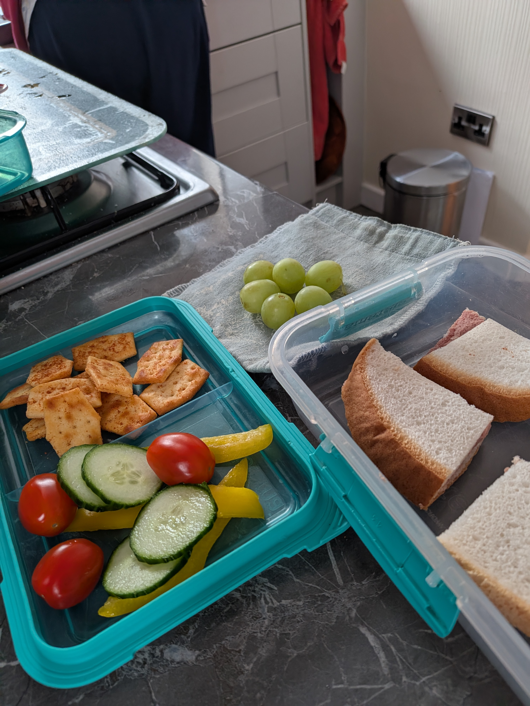
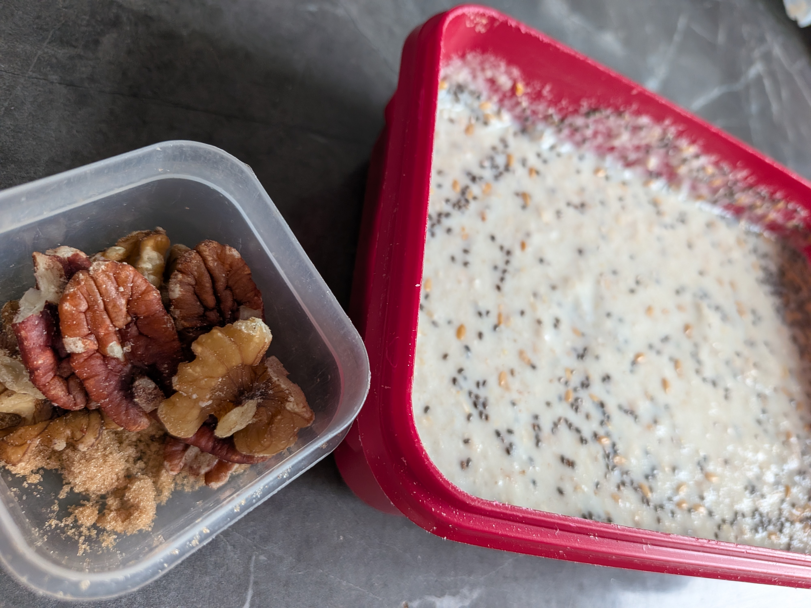

LIVING WITH IBS
My IBS Lunch Box for Work
How I plan my breakfast and lunch for work and why finding the right portion sizes has made such a difference for me.

I have to take a lunch box to work every day because I start really early, so I take both breakfast and lunch with me.
Before my IBS diagnosis, I used to eat a big handful of grapes, five or six cherry tomatoes, several slices of pepper and cucumber, along with a sandwich. I’ve since discovered that I can only tolerate six grapes, three cherry tomatoes, a couple of slices of pepper and a smaller amount of cucumber. I have to stick to those portions because if I eat too much, I know I’ll be in trouble.
Since cutting down on my salad portions, I’ve started adding a few crunchy extras, such as crisps or rice crackers. They help fill the gap and make my lunch feel a little more satisfying without having to increase the amount of salad I’m eating.
I’m very lucky that I can eat oats. Every day at work, I have Ready Brek, which I prepare the night before. I add chia seeds and linseed, along with some walnuts and pecans for a little extra fibre and crunch. I also add a small amount of brown sugar for a touch of sweetness.

Having IBS does take a lot of planning, especially when you need to take food to work every day, but over time you learn what your body can and can’t cope with. I’ve found that sticking to the foods and portion sizes that work for me makes such a difference.
← Back to blogs